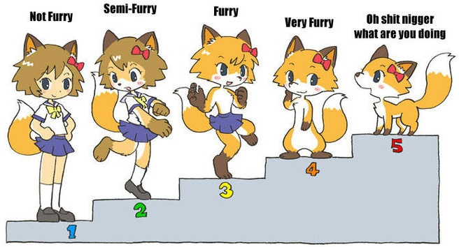

( 1 ) Perchè ci sono molti gruppi Furrama?
Ogni gruppo nasce per soddisfarre un certo tipo di target.
( 2 ) Cosa sono i Furry
Il termine Furry (vuol dire Peloso) viene utilizzato come termine gergale per intendere gli Animali antropomorfi.
( 3 ) Differenze tra Anthro e Feral?
Gli ANTHRO sono animali con caratteristiche (sia fisiche che psicologiche) umane, detti appunto Animali antropomorfi. Mentre, i FERAL sono animali con la loro anatomia più vicina alla realtà.

( 4 ) Differenza tra SFW e NSFW?
SFW (Safe for Work) indica materiale sicuro e/o che esso inappropriato verrà censurato. NSFW indica materiale sessualmente esplicito e/o offensivo. Analogo a VM18.
- Aggiungere informazioni importanti nella descrizione nel proprio profilo di Telegram -
( 1 ) Avvia Telegram, premi l'icona con i tre segni (in alto a sinistra) per aprire la tendina laterale, poi premi l'opzione Impostazioni.
( 2 ) Se non hai alcuna descrizione del profilo, premi nello spazio vuoto dove dice Bio - Aggiungi qualche riga su di te.
( 3 ) Ricordati! Il massimo dei caratteri da inserire sono 70, quindi, devi avere il dono della sintessi ed inserire le informazioni importanti ed evocative nella descrizione del tuo profilo, come ad esempio:
🇮🇹 | M | 21yrs | PM & RP Friendly
Bandiera: Indica il tuo luogo di nascita. Sesso: Indica il tuo sesso attuale. Yrs: Indica la tua età attuale. PM Friendly: Indica il tuo esser aperto nell'essere contattato in privato da qualcuno. RP Friendly: Indica il tuo esser aperto nel fare gioco di ruolo con qualcuno.
- Creare cartelle su Telegram ufficiale -
( 1 ) Se hai già scaricato Telegram in ver. Beta e configurato, avvialo e, dalla schermata principale, premi l'icona con i tre segni (in alto a sinistra), poi premi l'opzione Impostazioni, poi su Cartelle, per poi selezionare l'opzioni Crea nuova cartella.
( 2 ) Inserisci il nome della cartella su Nome cartella, poi premere su Aggiungi Chat. Dalla barra di ricerca (con l'icona della lente di ingrandimento), inserisci la parola Furrama ed aggiungi Furrama Pocket ed i gruppi al riguardo. Ripeti il punto 2 e dopo che hai finito, premi su Salva, per poi chiudere la finestra premendo la X (in alto a destra) e troverai proprio la cartella che avevi creato in precedenza a sinistra.
- Creare cartelle su Telegram con Plus Messenger -
( 1 ) Se hai già scaricato Plus Messenger (basato su Telegram) dal Play Store (o da altre fonti), avvialo e, dalla schermata principale di Plus, premi l'icona della cartella (in alto a destra), poi premi l'opzione Aggiungi categoria ed inserisci il nome Furrama, per poi premere su OK.
( 2 ) Poi, seleziona il canale Furrama Pocket e i gruppi Furrama. Per facilitare il tutto, premi l'icona della lente di ingradimento (in alto a destra), per poi scrivere la parola da cercare (Furrama) e seleziona ciò che hai trovato al riguardo. Ripeti il punto 2 e dopo che hai finito, premi l'icona del segno di spunta (in alto a destra). Apparirà, successivamente, l'avviso di conferma, dove ti mostrerà tutto ciò che avevi selezionato prima e, se sei certo di aver fatto tutto giusto, premi Sì.
( 3 ) Successivamente, sarai catapultato nella schermata Categorie, dove puoi selezionare ogni categoria che avevi creato in precendeza. Da quella schermata, puoi aggiungere una nuova categoria premendo l'icona + (in alto a destra). Questa schermata può essere raggiungibile tenendo premuto l'icona della cartella dalla schermata principale di Plus Messenger.
( 4 ) Questo punto è facoltativo: Affianco al nome della categoria (in questo caso, Furrama) premi l'icona con i tre puntini. Ecco le seguenti opzioni: Modifica nome categoria, Modifica categoria (puoi scegliere quale escludere in quella categoria), Elimina (la categoria), Seleziona chat (ti permette di fare tutto ciò che dice nel punto 2) e Aggiungi alla Home (non lo consiglio, visto che non funziona come dovrebbe).
( 5 ) Anche questo è facoltativo: Dalla schermata Categorie, premi l'icona dei tre puntini (con nessuno nome della categoria affianco e si trova in alto a destra). Ecco le seguenti opzioni: Nascondi icona delle categorie (sconsigliato), Esporta categorie (ti permette di creare un piccolo backup. Consiglio di salvarlo in un File Manager) ed Importa categorie (puoi ripristinare il backup fatto in precedenza. Se l'hai salvato nella memoria interna, seleziona Sfoglia i tuoi file di sistema, altrimenti, seleziona Sfoglia il tuo archivio esterno. Scorri e trova il file indicato con l'icona con su scritto cat ed il gioco è fatto!).